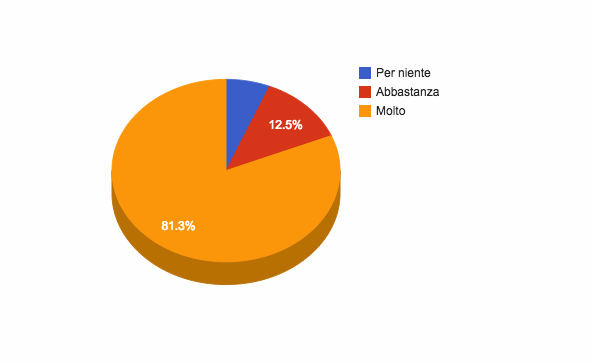
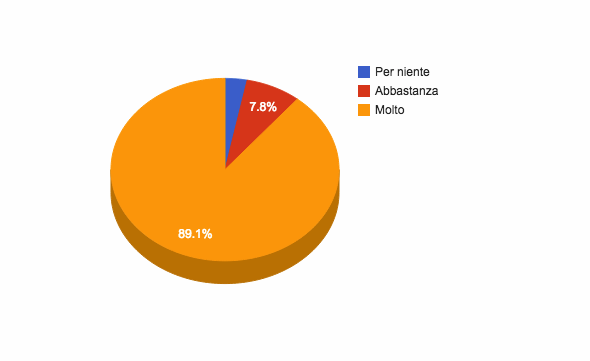
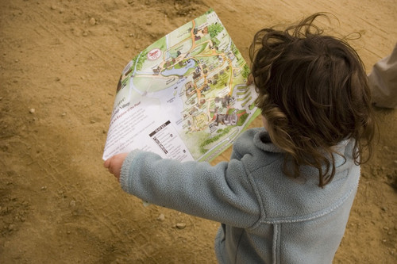

Archivio per la categoria ‘Entropia’
16 febbraio, 2015 | di Lorenzo Perone
Con questo post vogliamo fare il punto su quanto avvenuto dopo la chiusura del sondaggio sul ruolo del GIM che abbiamo promosso sull’onda della proposta di Sergio Farruggia, per avere un riscontro condiviso, con un panel di operatori del settore geo-ICT.
Iniziamo con il ringraziare quanti hanno partecipato, numerosi rispetto alle aspettative. Ci ha colpito sia il numero che la qualità dell’adesione alla proposta, anche questa non era scontata.
Altro motivo di riflessione è legato a coloro che hanno deciso di rispondere al questionario: molti degli operatori invitati hanno deciso di non esprimersi, mentre c’è stata, in proporzione, una maggiore adesione spontanea all’iniziativa, anche questo è secondo noi un fatto importante.
I dati
Abbiamo inviato per email poco meno di 100 inviti alla compilazione del questionario e ricevuto (grazie anche ad un po’ di comunicazione sul web) 64 risposte.
Quelle alla prima domanda – “Ritieni che il ruolo del GIM sia utile per la PA?” – sono così distribuite:
- 4 “Per Niente”;
- 8 “Abbastanza;
- 52 “Molto”.
Più del 80% dei partecipanti ha espresso un feedback positivo.

Le risposte alla domanda “Ritieni che il ruolo del GIM sia utile per le città/comunità?” sono invece così distribuite:
- 2 “Per Niente”;
- 5 “Abbastanza;
- 57 “Molto”.
Un feedback positivo più forte da cui emerge una valutazione migliore di questo ruolo nel contesto delle città/comunità: 2 persone che avevano valutato per niente utile il GIM per la Pubblica Amministrazione, lo trovano più efficace in un contesto più “dal basso”.

Infine, circa 50 persone hanno manifestato la disponibilità a partecipare alla costruzione di questa campagna, lasciando il proprio indirizzo mail.
I luoghi di #GIMNow
Come già annunciato in precedenza è stata aperta una “mailing list/gruppo di discussione” per costruire insieme questa idea e renderla concreta, la mailing list sta prendendo vita ed abbiamo già iniziato alcune discussioni, ad esempio condividendo i RAW data delle risposte al questionario.
Il canale Twitter @biggimnow potrebbe rappresentare un’ulteriore strumento utile di discussione.
Per stimolare una analisi condivisa utilizziamo un unico documento, contenente le proposte emerse dal questionario su cui ragionare assieme.
Abbiamo “creato” uno spazio su http://big-gim.it in cui raccogliere e sistematizzare il frutto del confronto sul tema del GIM.
La redazione di TANTO.
Posted in Entropia | 1 Comment »
8 gennaio, 2015 | di Lorenzo Perone
Qualche settimana fa, qui su TANTO, un post di Sergio Farruggia proponeva una riflessione sul ruolo del Geographic Information Manager.
L’idea ci ha appassionato ed abbiamo deciso, come redazione, di provare a coinvolgere i nostri personali contatti.
Questa mattina è partita la seguente email, destinata a circa 100 persone.
Oggetto: costruisci assieme a noi il ruolo del Geographic Information Manager
Ciao, alcune settimane fa abbiamo pubblicato un post che lanciava l’idea del Geographic Information Manager, una figura da inserire negli organismi d’indirizzo di processi “smart” di una città e/o comunità, per favorire la valorizzazione degli aspetti legati all’informazione geografica.
“Un esperto di settore, il cui compito fondamentale sia quello di favorire l’incremento del livello di qualità e competenza tecnica all’interno del network che costruisce una comunità intelligente, nei riguardi delle tematiche legate alla capacità di fruire dei dati territoriali (spatial enablement), sia intesa rispetto alla disponibilità di queste informazioni, sia come abilità conseguite per il loro sfruttamento.”
A noi l’idea sembra buona, ma vorremmo capire cosa ne pensano altri attori di questo settore e ti chiediamo, in prima battuta, di compilare questo brevissimo questionario.
Cerchiamo però più di una semplice approvazione e, se l’idea ti sembra interessante, vorremmo provare a discuterne pubblicamente in questa mailing list per definire assieme competenze e ambiti operativi di questa nuova figura.
Chiuderemo il questionario il 18/01/2015.
Grazie, la redazione di TANTO.
Perché l’invio di un’email diretta? Perché quello che cerchiamo di avviare è un percorso di confronto attorno ad un tema che ci sembra importante, ed il modo migliore che ci è venuto in mente è quello di coinvolgere, in prima persona, la nostra rete di contatti.
Coinvolgere direttamente, via email, un limitato numero di persone è stata una scelta legata al rigetto di operazioni simil-spam che ciascuno di noi ha sviluppato negli (ultimi) anni, piuttosto che il tentativo di definire un ristretto gruppo di influencer da coinvolgere nella promozione del ruolo del Geographic Information Manager.
Se l’idea raccoglierà, come immaginiamo, un certo interesse, crediamo che la discussione si propagherà in maniera naturale. Il confronto attraverso questa mailing list pubblica è aperto infatti a chiunque abbia interesse e desiderio di parteciparvi. Proponiamo anche un hashtag: #GIMnow con cui veicoleremo informazioni, statistiche sui risultati del questionario e quello che emergerà da una discussione che ci auguriamo possa fattivamente contribuire a “favorire l’incremento del livello di qualità e competenza tecnica all’interno del network che costruisce una comunità intelligente, nei riguardi delle tematiche legate alla capacità di fruire dei dati territoriali (spatial enablement), sia intesa rispetto alla disponibilità di queste informazioni, sia come abilità conseguite per il loro sfruttamento.”
La redazione di TANTO.
Aggiornamento del 19 gennaio
Il questionario é stato chiuso e messo off-line, stiamo ora analizzando le risposte. Pubblicheremo a breve i dati grezzi relativi alle risposte (resi anonimi) ed inizieremo una sintesi delle analisi, delle critiche e delle proposte pervenute.
Per partecipare alla discussione é possibile iscriversi alla mailing list e seguire il canale twitter e l’hashtag #GIMnow.
Posted in Entropia | 1 Comment »
18 dicembre, 2014 | di Sergio Farruggia
I geo-dati sono come un ordito per tessere città “smart” e la geo-ICT inonda di applicazioni l’ecosistema della città intelligente; la governance dei processi “intelligenti” si basa sulla cooperazione tra gli attori coinvolti secondo un modello a rete. Perché non pensare di inserire negli organismi d’indirizzo di ogni smart city -prima che per legge, come scelta di buon senso- la figura professionale del Geographic Information Manager?

L’idea del GIM è presa per analogia con l’energy manager, professione di cui si è incominciato a parlare nei primi anni ’80, dopo le note crisi petrolifere degli anni ‘70. Il modello seguito per questa -ormai radicata- professione potrebbe essere adattato al mondo delle Smart City, per sostenere in questo contesto l’uso consapevole dei geo-dati e delle relative tecnologie disponibili.
Potremmo identificare il Geographic Information Manager come un esperto di settore, il cui compito fondamentale sia quello di favorire l’incremento del livello di qualità e competenza tecnica all’interno del network che costruisce una comunità intelligente, nei riguardi delle tematiche legate alla capacità di fruire dei dati territoriali (spatial enablement), sia intesa rispetto alla disponibilità di queste informazioni, sia come abilità conseguite per il loro sfruttamento.
Tra settore energetico e quello dell’informazione geografica esistono ovviamente innumerevoli differenze. Mi sono lasciato però suggestionare da due caratteri comuni. Per entrambi gli ambiti –questo è il primo aspetto- i percorsi di studio che consentono di acquisire le conoscenze di base, nell’uno come nell’altro settore, possono essere diversi: la preparazione teorica è un prerequisito ma conta assai di più il successivo percorso di specializzazione, soprattutto on the job. La seconda caratteristica è la sensibilità culturale iniziale della classe dirigente del Paese nei confronti delle problematiche e delle opportunità di cui il primo è stato portatore, assai simile a quella mantenuta, almeno finora, nei riguardi delle istanze del settore dei dati geografici digitali.
Sappiamo che produzione e gestione dei dati geografici sono attività complesse, comportano costi consistenti; essi hanno potenzialità di riuso assai marcate e, infatti, sono i dati tra i più richiesti della PA: quelli disponibili hanno però un livello di fruibilità ancora insoddisfacente. Guardare alle informazioni geografiche come a una sorta di “forma di energia” può aiutare una comunità “smart” a comprendere meglio quanta ne produce, quanta ne utilizza, per che fini e –soprattutto- con quale “rendimento”, cioè qual è e a quanto ammonta la quantità che si spreca ecc., ecc.
Il ruolo dell’energy manager è stato introdotto per legge: la 10/1991, ha stabilito infatti che i soggetti (enti pubblici e privati) caratterizzati da consumi annui di energia al di sopra di una data soglia, debbano nominare un tecnico per “la conservazione e l’uso razionale dell’energia”. Tale norma è stata, a più riprese, ampliata e diffusa ad altre funzioni. Come in occasione del recepimento della direttiva 2006/32/CE, riguardante l’efficienza degli usi finali dell’energia e i servizi energetici: all’energy manager il legislatore ha affiancato l’esperto in gestione dell’energia (D.Lgs. 115/2008). Inoltre, questa seconda legge ha introdotto anche una procedura di certificazione volontaria, descritta in una norma tecnica, la UNI-CEI 11339:2009.
Lo scorso luglio, tale certificazione è stata resa obbligatoria (D.Lgs. 102/2014, “Attuazione della direttiva2012/27/UE sull’efficienza energetica”) sia nei riguardi dell’esperto in gestione dell’energia, con riferimento allo svolgimento di alcuni compiti, sia rispetto agli enti pubblici e privati indicati dalla legge 10/1991; essi, per continuare a beneficiare di riconoscimenti economici derivati da azioni di risparmio energetico adottate, dal 2016 dovranno nominare energy manager che abbiano acquisito la citata certificazione.
Un argomento da considerare –per l’idea del GI Manager- riguarda l’evoluzione delle modalità di gestione dell’elenco degli energy manager (non è un albo) e della formazione di questi professionisti. La legge del ‘91 si è limitata a stabilire che L’Agenzia per l’Energia (ENEA), dovesse provvedere -attraverso convenzioni con le Regioni- all’aggiornamento dei tecnici. L’introduzione della certificazione ha indotto il coinvolgimento di diversi organismi. Ovviamente, l’ENEA ha ampliato il proprio ruolo: attraverso la Federazione Italiana per l’uso Razionale dell’Energia, FIRE, iniziativa di cui è stata promotrice, gestisce dal 1992 la rete degli energy manager, su incarico del Ministero dello Sviluppo Economico. Più recentemente (2008), FIRE ha costituito una struttura interna dedicata alla certificazione delle competenze degli Esperti in Gestione dell’Energia: il SECEM (Sistema Europeo per la Certificazione in Energy Manager). Inoltre, il D.Lgs. del luglio scorso, assegna ad Accredia, organismo nazionale di accreditamento, la predisposizione degli schemi di certificazione e accreditamento e all’Ente Italiano di Normazione, UNI, l’elaborazione delle norme tecniche per la certificazione, indicando agli stessi di avvalersi della collaborazione del Comitato Termotecnico Italiano, di GSE SpA (Gestore dei Servizi Energetici, società del Ministero dell’Economia e delle Finanze), oltre che dell’ENEA.
Ma se i tempi necessari per vedere all’opera un GIM fossero dell’ordine di un decennio, come avvenuto per l’energy manager, non potremmo certamente essere soddisfatti. Inoltre, come si può appurare consultando i siti dedicati all’argomento, l’introduzione di questa figura per legge, seppur sostenuta da associazioni di settore, non ha garantito di per sé una sua diffusione consapevole e sempre efficace. Negli anni immediatamente successivi l’entrata in vigore della norma istitutiva, le aziende e le pubbliche amministrazioni interessate da questa normativa provvidero all’assegnazione di questi compiti affidandoli prevalentemente a tecnici già in staff alla struttura. Gli energy manager della prima ora erano tutti esperti nella materia? No, affatto. La legge non forniva indicazioni sul CV richiesto; inoltre, in molti ambienti l’attenzione dei vertici manageriali al tema energetico era scarsa, la disposizione normativa accolta come un’incombenza burocratica e, comunque, i professionisti competenti non erano molti.
Esistono però alcuni elementi che meritano di essere considerati. Rispetto al contesto degli anni ’80, oggi si può prevedere che il processo di promozione del GIM possa essere innescato e sostenuto facendo leva sulla partecipazione attiva di comunità in Rete, coalizzando nello specifico la comunità geomatica. E’ anche possibile prevedere di assegnare, per esempio, all’AgID un ruolo analogo a quello ricoperto da ENEA o, più precisamente, dalla FIRE. L’Agenzia per l’Italia Digitale è la naturale organizzazione cui fare riferimento per la gestazione della figura del GIM. Mi pare questa un’ipotesi che non dovrebbe suscitare perplessità o contrarietà nell’ambiente geomatico: l’Agenzia è l’organo deputato per l’applicazione delle strategie per la crescita digitale e, tra i diversi compiti, è impegnata per lo svolgimento del programma nazionale per la cultura, la formazione e le competenze digitali; ha coordinato il Comitato per le Regole Tecniche sui Dati Territoriale, best practice in termini di cooperazione interistituzionale ed ha riavviato recentemente i gruppi di lavoro tematici. Last but not least, in seno ad AgID è presente il comitato tecnico delle Comunità intelligenti, organismo che supporta le attività dell’Agenzia riguardanti questa materia tramite l’operato di quattro gruppi di lavoro, ognuno con specifici obiettivi.
L’iniziativa FIRE, si legge sul sito della federazione, ha avuto origine dalla convergenza di diverse esperienze associative, raccoglie soci che rappresentano tutti i comparti del settore e opera attraverso un nucleo di supporto fornito dall’ENEA. Trasferendo tale descrizione alla “Federazione Italiana per l’Informazione Geografica”, non si dovrebbe creare l’ennesima associazione di questo settore: essa dovrebbe fungere da tavolo inclusivo di supporto ai GIM, in sintonia con gli indirizzi indicati dalle politiche per lo sviluppo delle competenze digitali, di cui AgID è il riferimento operativo.
I temi sui quali dovrebbe essere competente un GIM e per i quali, quindi, dovrebbe essere fornito supporto formativo, andrebbero approfonditi. Ne segnalo giusto due. L’applicazione del concetto “spatial enablement” al processo di una Smart City comporta l’esigenza di misurare il grado di aderenza a tale paradigma, per esempio valutare la capacità di PA, cittadini e imprese nell’uso dei dati territoriali per organizzare le loro attività e i modi di comunicare. La conoscenza dei punti di forza e dei limiti consente di definire le azioni da perseguire, le quali dovranno essere monitorate per seguirne l’attuazione, intervenendo per correggere eventuali scostamenti dai risultati attesi.
All’interno di questo tema, un GIM dovrà tenere sotto controllo e proporre azioni per migliorare la capacità di implementazione della direttiva INSPIRE, in sintonia con l’INSPIRE Maintenance and Implementation Framework approntato dalla Commissione Europea.
Il lavoro del GIM può far sì che la città -come “essere vivente”- impari a organizzare le informazioni geografiche tenendo presente i costi per generarle e permettendone l’utilizzo ogniqualvolta serve, a ogni utilizzatore, impegnandosi -e ingaggiando la città- per creare cicli d’informazioni geografiche sostenibili.
Il suo operato può inoltre avere degli effetti collaterali estremamente positivi. Da un lato generare una forte domanda per nuove professionalità legate proprio al mondo della GI, inducendo quindi la definizione di programmi formativi specifici sia in ambito accademico, sia post laurea. D’altro canto, le soluzioni individuate dai Big GIM potrebbero fungere da volano, stimolando grandi opportunità di crescita del mercato Geo-ICT.
foto di troybthompson
Posted in Entropia | 2 Comments »
17 novembre, 2014 | di Antonio Rotundo
Due “Italie”. Non è la sintesi della fotografia del nostro Paese del consueto rapporto sociologico-economico-politico, ma la raffigurazione paradossale e contraddittoria dell’Italia, relativamente alla disponibilità del patrimonio informativo dei dati e i servizi geografici, in base alla prospettiva da cui la si analizza, nazionale o europea.
Nelle scorse settimane AgID ha pubblicato il report che presenta lo stato delle attività di alimentazione del RNDT (il catalogo nazionale dei metadati di dati e servizi territoriali) da parte delle Pubbliche Amministrazioni italiane. Negli stessi giorni, l’Agenzia Europa dell’Ambiente ha reso noto il rapporto sullo stato di attuazione della direttiva INSPIRE a metà del processo di implementazione, in cui, tra l’altro, è rappresentata la situazione sulla disponibilità dei metadati anche attraverso i servizi di ricerca.
L’Italia del RNDT è quella che rende conoscibili le informazioni (gli ormai arcinoti metadati) su un discreto numero (7814 per la precisione) di dati e servizi, indicandone le caratteristiche e le modalità per l’accesso e l’utilizzo.
L’Italia che esce fuori dal secondo rapporto è il Paese che, insieme ad altri 5 (Bulgaria, Cipro, Malta, Lituania ed Ungheria), su 28 Stati Membri, non rende disponibile quelle informazioni attraverso il geoportale comunitario, nonostante l’obbligo derivante dalla Direttiva INSPIRE (come si vede dalla mappa creata da Andrea Borruso sulla base delle informazioni del rapporto stesso).

È, quindi, un’Italia che non esiste. Un patrimonio di dati e servizi inesistente, nonostante gli sforzi economici, tecnici e tecnologici di tante Amministrazioni. O meglio, un patrimonio esistente ma che non è dato di conoscere, come se si fosse tornati indietro di un po’ di anni quando i dati erano tenuti in qualche “cassetto” inaccessibile.
Il paradosso che se ne produce è che se Giancarlo, giusto per usare un nome noto al blog che ci ospita, qui utilizzato per identificare un utente generico (cittadino, professionista, tecnico, decisore politico che sia), utilizzasse il catalogo nazionale o i tanti cataloghi dei singoli Enti italiani allora riuscirebbe a trovare le informazioni che cerca risparmiando tanto tempo prezioso che potrà impiegare nella valutazione, nell’utilizzo e nell’elaborazione dei dati.
Se invece il punto di accesso fosse il geoportale INSPIRE, allora la sua ricerca si rivelerebbe vana e se, per assurdo, il geoportale fosse l’unico punto di accesso, allora si ritroverebbe catapultato diversi anni indietro quando l’unica possibilità di conoscere la disponibilità di dati e servizi era quella di andare fisicamente a chiedere agli uffici dei vari Enti territoriali.
Tutto ciò nonostante sia stata addirittura introdotta recentemente (DL 91/2014 convertito nella legge 116/2014) una modifica al D. Lgs. di recepimento della Direttiva INSPIRE (32/2010) per cambiare … un “articolo”: così l’art. 7 comma 4 che recitava “Il servizio di ricerca [...] è garantito sulla base del RNDT [...]” è diventato “Un servizio di ricerca […] è garantito sulla base del RNDT [...]”. Ad oggi, però, per l’Europa i servizi di ricerca italiani (il RNDT non sarebbe più “il” servizio di ricerca ma “un” servizio di ricerca) sono rimasti ancora indeterminati, almeno a quanto risulta dal rapporto EEA.
Eppure, se i dati e i servizi documentati nel RNDT fossero “visibili” al geoportale europeo, l’Italia si posizionerebbe, per numerosità delle risorse informative, tra i primi 5 Stati Membri. Un bel balzo: dall’inesistenza all’alta classifica!
In più, come si evince dal report RNDT, le tipologie di dati documentati coprono quasi tutte le categorie tematiche (dall’utilizzo del territorio alle ortoimmagini, dalle reti di trasporto all’idrografia, dai nomi geografici alla pianificazione) offrendo a Giancarlo una gamma di risorse informative da poter utilizzare (a seconda della policy sul dato della Amministrazione titolare) per gli impieghi più disparati. Solo per dare un’idea si riportano alcuni grafici tratti dal report relativi al numero di dati descritti, in riferimento ai temi INSPIRE.

Al fondo, c’è il mancato adempimento della registrazione del (o di un) servizio di ricerca nazionale al geoportale INSPIRE da parte dell’Italia. Un adempimento che richiede l’invio di una mail con l’indicazione dell’endpoint del servizio da inserire in uno specifico registro. L’inserimento in tale registro farebbe sì che le risorse presenti nel catalogo nazionale siano rese disponibili nell’area di discovery del geoportale europeo. In questo modo il nostro Giancarlo vedrebbe soddisfatto il bisogno di conoscere la disponibilità di dati e servizi a prescindere dal punto di accesso, anche, stavolta, nell’eventualità di dover elaborare set di dati transnazionali, per esempio.
La storia è nota ai più. Se a qualche lettore del blog fosse sfuggita può leggere l’appello alla base della campagna “Vogliamo l’Italia nel registro INSPIRE” (#italy4INSPIRE) che questo stesso blog, insieme a tanti altri blog di informazione geografica e alla comunità geomatica italiana, hanno lanciato ad inizio anno.
Alla campagna è seguita anche un’interrogazione parlamentare presentata nel mese di luglio scorso e rimasta ancora senza risposta.E’ di qualche giorno fa (12 novembre), inoltre, la presentazione di una nuova interrogazione parlamentare che, ricalcando la prima e tenendo conto delle risultanze del rapporto EEA, sollecita la registrazione di un servizio di ricerca italiano al geoportale INSPIRE.
L’auspicio è che si pervenga quanto prima ad avere una sola Italia, un Paese, cioè, che sappia rappresentare anche a livello europeo il reale stato dell’arte circa la disponibilità dei dati e servizi territoriali.
Non solo per sanare un’evidente violazione del diritto comunitario; quanto anche per dare evidenza al costante e ingente impegno delle amministrazioni pubbliche italiane a rendere sempre più conoscibile, disponibile e interoperabile il proprio patrimonio informativo. E soprattutto per offrire anche agli utenti italiani la possibilità di poter fruire dei servizi resi disponibili nel contesto INSPIRE.
Per farci sentire un po’ più europei anche in questo!
Posted in Entropia | 1 Comment »
1 settembre, 2014 | di Sergio Farruggia
NdR: pensiamo che questo post di Sergio meriti una lettura “da divano”. Per questo è eccezionalmente disponibile anche in epub, mobi, pdf e azw3.
 Rovistando in soffitta ho messo le mani su un taccuino sgualcito, dai fogli ingialliti, contenente quelli che sembravano, ad una prima occhiata, appunti disordinati. Di solito si recuperano tracce di un passato, più o meno lontano. Immaginerete lo stupore, quando ho letto una data: 3 agosto 2054! Sarà vera? Uno scherzo della Follia? Chissà. Il testo non riporta alcun nome.
Rovistando in soffitta ho messo le mani su un taccuino sgualcito, dai fogli ingialliti, contenente quelli che sembravano, ad una prima occhiata, appunti disordinati. Di solito si recuperano tracce di un passato, più o meno lontano. Immaginerete lo stupore, quando ho letto una data: 3 agosto 2054! Sarà vera? Uno scherzo della Follia? Chissà. Il testo non riporta alcun nome.
Del Principio d’Indeterminazione della Cartografia
Nel corso della prima decade del XXI secolo si è fatto strada un processo per la realizzazione di cartografie del tutto ignoto in precedenza. Questo trattatello, ripercorrendo la storia recente della scienza cartografica, vuole essere un ricordo del progresso generato da questa scoperta e un tributo alla tenacia di quanti hanno contribuito alla sua affermazione.
Com’è noto, il processo classico, stabilito per la riproduzione ridotta di una porzione di superficie terrestre, consta essenzialmente di tre fasi: l’esecuzione di un rilievo sistematico dell’area considerata, il collaudo della riproduzione ottenuta[1] e, infine, la pubblicazione dello strumento cartografico e la sua divulgazione a beneficio dei suoi utilizzatori. Questo processo, perfezionato e codificato nel tempo, ha raggiunto un livello di accuratezza della riproduzione del mondo reale rasente la perfezione[2] nella seconda metà del novecento, quando è stato introdotto l’uso delle tecnologie e dei media digitali.
Il caso dello sviluppo della scienza cartografica ha molti aspetti interessanti: la pratica ha, infatti, precorso la teoria, cioè prima è stato ideato il processo per riprodurre su mappa parti di territorio, quindi è stato sistematizzato il suo fondamento teorico[3], attraverso la formulazione dei principi di base di questa strana scienza.
I principi della cartografia, tre più un principio cui è ormai invalso riferirlo come principio “zero” della cartografia, sono stati introdotti all’inizio di questo secolo per regolare la produzione delle carte, il loro utilizzo e i loro limiti. Sono assiomi legittimati dall’esperienza, sui quali si fonda tutta la teoria che riguarda la produzione di mappe. Qui di seguito vengono riportati gli enunciati più comunemente adottati nei manuali.
Il cosiddetto principio “zero” postula che se due mappe hanno la stessa scala di una terza, allora esse medesime condividono la stessa scala. Questo, seppur ovvio, principio consente di definire la scala come grandezza in grado di indicare se due mappe descrivono lo stesso territorio: nella sostanza, stabilisce che per un territorio dato, due mappe confrontabili tra loro, hanno la stessa scala.
Il primo principio della cartografia, rappresenta la formulazione della legge di conservazione dei dati geografici: esso afferma che nell’ambito di un processo di riproduzione di un territorio isolato (cioè perimetrato) i geo-dati non sono né creati né distrutti, ma trasformati.
Del secondo principio della cartografia esistono molti enunciati. Quelli epistemologicamente più rilevanti sono i seguenti.
- E’ impossibile realizzare una trasformazione di scala il cui unico risultato sia quello di trasferire informazione geografica da una mappa a scala più piccola (di minor dettaglio) a una a scala più grande (di maggior dettaglio) senza l’apporto di informazioni aggiuntive o esterne.
- E’ impossibile realizzare una trasformazione di scala ciclica della rappresentazione di un territorio dato il cui unico risultato sia la rappresentazione di tutte le informazioni geografiche possedute dal territorio stesso.
- E’ impossibile realizzare una mappa la cui rappresentazione del territorio considerato coincida con la totalità delle informazioni geografiche della realtà[4].
Infine, il terzo principio, afferma che la rappresentatività della realtà di una mappa a scala 1:1 è zero[5]. In tempi più recenti a questo principio è stata data una veste nuova, precisamente: “Non è possibile raggiungere la rappresentazione omnicomprensiva del territorio considerato tramite un numero finito di rilievi”.
Sebbene sia comune l’uso della dizione “principio”, quest’ultimo non è assunto vero a priori, ma può essere dimostrato a partire dai precedenti, in particolare dal secondo. Esula dagli scopi di questo trattatello la sua dimostrazione: basti, a questo riguardo, riflettere ad esempio sulle deduzioni ricavabili dal terzo enunciato del secondo principio. Invece, vale la pena evidenziare che il terzo principio anticipa caratteristiche della rappresentazione della realtà del territorio individuate a seguito dell’applicazione del processo scoperto agli inizi di questo secolo.
Tale nuovo processo, la cui definizione è stata resa possibile grazie a tecnologie innovative per la manipolazione dei dati geografici[6] e la loro diffusione attraverso la Rete, a vantaggio di un loro uso di massa, ha consentito di addentrarsi nella cosiddetta cartografia infinitamente dettagliata. Esso prevede una diversa sequenza delle tre fasi del processo classico, precisamente: rilievo pseudo-disordinato dell’area, anche attingendo da mappe prodotte mediante il processo classico (quando disponibili), immediata pubblicazione dei risultati e collaudo della riproduzione in continuo divenire.
La comparsa sulla scena della scienza cartografica di questo secondo processo per ottenere mappe ha acceso un confronto, talvolta anche aspro, tra i suoi sostenitori e coloro che hanno ritenuto di avere identificato in esso falle concettuali che –a loro giudizio- impediscono la corretta riproduzione della realtà del territorio, inficiando l’utilizzo delle mappe così ricavate.
La prima critica avanzata esamina la validità teorica di questo nuovo processo per due aspetti fondamentali. Il primo concerne la disomogeneità spaziale della precisione della rappresentazione, quindi della corrispondente affidabilità, del rilievo all’interno della mappa, che renderebbe inapplicabile il principio della conservazione dei geo-dati. Il secondo aspetto riguarda una certa confusione riscontrata nell’utilizzo di dati derivanti da mappe di scale differenti per comporne una risultante, approccio che è parso andare in conflitto con quanto stabilito dal secondo principio della cartografia.
Una critica ancor più radicale considera l’efficacia del trasferimento di contenuti informativi di carte già collaudate o autenticate, in mappe create tramite il nuovo processo. Si è sostenuto che tale operazione, anche quando rispettasse i principi fondamentali, è priva di significato, poiché rende disponibile una mappa già esistente[7], degradata in termini di affidabilità, perché sfornita di certificazione di avvenuto collaudo.
Quest’ultima valutazione è stata raccolta per difendere la validità del nuovo processo, ribaltandone le conclusioni. Infatti, secondo i sostenitori di questo secondo percorso, la sua scoperta si deve ai troppi vincoli che hanno limitato un’ampia fruizione degli strumenti cartografici prodotti tramite il primo processo. La mancanza di disponibilità di rappresentazioni del territorio ha quindi ispirato conoscenze del tutto nuove sulla scienza cartografica.
In primo luogo, la definizione e la sperimentazione di questo secondo processo, ha messo in risalto il ruolo di chi esegue i rilevamenti (da una mappa preesistente o dalla realtà). Nell’ambito del processo classico tale figura, circoscritta a un numero limitato di specialisti, ha un ruolo assoluto: si assume che questi, operando, riproducano sulla mappa la realtà, senza interferire con essa, cioè siano osservatori esterni all’universo cartografico. Di contro, lo sviluppo delle tecnologie digitali e la diffusione di massa del loro impiego hanno trasformato il contesto: hanno aumentato di diversi ordini di grandezza il numero di soggetti in grado di eseguire rilevamenti creando una nuova figura: il cittadino-cartografo. Lo studio di questo nuovo fenomeno ha evidenziato che in realtà chi esegue un rilevamento del territorio perturba la rilevazione, falsando la conoscenza della realtà. E’ stato altresì ricavato sperimentalmente che, dato il numero notevole dei soggetti coinvolti, le perturbazioni statisticamente si compensano a vicenda e l’affidabilità media ottenibile risulta dello stesso ordine di grandezza di quella conseguita attraverso l’applicazione del secondo processo, facendo così risaltare una complementarietà tra i due processi.
Del pari, approfondendo le caratteristiche di tale complementarietà sono state scoperte altre proprietà della cartografia. La modalità realizzativa adottata con il nuovo processo –così detta “per quanti di rilievo”- ha fatto emergere l’esistenza di limiti cartograficamente irremovibili[8] allorquando ci si spinge verso scale di rappresentazione sempre più grandi, come già il terzo principio della cartografia aveva fatto intuire. Un’altra proprietà individuata, legata alla precedente, riguarda il limite –anch’esso irriducibile- nella determinazione contemporanea di grandezze legate all’evoluzione del contenuto informativo della mappa nel tempo[9], quali la variazione dell’affidabilità della mappa e il tempo di esecuzione del rilievo.
Tale fenomeno, non rilevabile applicando il primo processo, è emerso con tutte le sue implicazioni scoprendo il secondo processo. Infatti, in questo contesto l’esecuzione di un quanto di rilievo e la sua fruibilità sono eventi che possono essere considerati coincidenti, ma la cui affidabilità è assicurata dai successivi controlli effettuati dalla comunità dei cittadini-cartografi, eventi di cui non può essere noto a priori il momento della sua attuazione. E’ stato però appurato sperimentalmente che, in virtù del numero elevato dei soggetti coinvolti, il tempo necessario per garantire l’affidabilità della mappa è ordini di grandezza inferiori a quelli relativi al processo classico, come verrà illustrato tra breve. Il risultato a cui si è pervenuti per comprendere e giustificare questa proprietà è la formulazione del così detto principio di indeterminazione della cartografia, il quale stabilisce che non è pensabile conoscere simultaneamente –senza indeterminazione nei valori- il tempo di aggiornamento di una mappa e la corrispondente variazione della sua affidabilità.
Occorre invece ricordare che nell’ambito del processo classico, la valutazione simultanea dell’affidabilità e dei tempi di aggiornamento è gestita tramite un espediente: si assume per convenzione che la realtà sia quella descritta dalla mappa, indipendentemente dal fattore tempo. Una mappa realizzata tramite il processo classico “ferma” la realtà nell’attimo in cui viene eseguito il rilievo, operazione che può avvenire anche in tempi assai contenuti (si pensi a quelli richiesti per una ripresa aerofotogrammetrica). Si può così stabilire una data precisa alla quale fare corrispondere la realtà descritta dalla mappa. Le operazioni di riproduzione sulla mappa del rilievo e successivo collaudo impegnano un tempo assai più lungo, che può essere dell’ordine di parecchi mesi, in alcuni casi superare anche l’anno. In generale, maggiore sarà l’affidabilità che si vorrà ottenere, più numerosi saranno i controlli e le verifiche richieste. Comunque, quando la mappa viene rilasciata e pubblicata, la realtà si sarà già modificata: l’escamotage adottato risolve inconfutabilmente la valutazione contemporanea delle due grandezze considerate.
Il principio d’indeterminazione della cartografia ha un’altra importante implicazione: esso permette di intervenire anche all’interno del ciclo di vita di una mappa classica e affrontare con successo la riduzione della sua inaffidabilità[10], senza dovere attendere l’attività di aggiornamento sistematico, in genere attuata quando ormai essa non è più altro che una raffigurazione del passato.
In definitiva, questo nuovo modo di procedere alla realizzazione della rappresentazione del territorio ha contribuito alla maggiore fruizione dei rilievi creati attraverso il processo classico, promuovendone una più ampia disponibilità, per cui ormai i due processi sono stati integrati e agiscono in modo complementare, consentendo un risultato de facto migliorativo della rappresentazione del territorio e dei suoi continui mutamenti.
__________________
PS. Amici ai quali ho sottoposto questi appunti, forse trovandoli di un qualche interesse e utilità, mi hanno suggerito di tradurli in altre lingue, perché possano raggiungere una platea di lettori più vasta, non solo italiana. Questo invito mi ha lusingato e ci ho riflettuto assai. Ho deciso, alla fine, di soprassedere: mi risulta che fuori dai confini nazionali la comparsa dei cittadini-cartografi abbia avuto tutt’altra storia. 3 agosto 2054.
[1] Generalmente eseguito da un soggetto diverso da chi esegue il rilievo.
[2] Per quanto questo vocabolo possa essere applicato in seno alla cartografia.
[3] Sono riportate alcune definizioni basilari. Universo cartografico: è costituito dalla realtà del territorio e dalla sua riproduzione rimpicciolita (l’oggetto di studio). Realtà del territorio: è identificabile con tutti i dati che si riferiscono agli oggetti -naturali e di origine antropica- ivi presenti (cosiddetti geo-dati) e con tutte le sorgenti di dati riferibili allo spazio geografico, rappresentabili sulla mappa. Mappa: una qualunque porzione dell’universo cartografico a cui ci si sta interessando come oggetto della riproduzione.
[4] Intuitivamente, si può assumere che il risultato ottenuto sarebbe illeggibile (effetto tabula nigra).
[5] E’ interessante ricordare che questo enunciato del terzo principio è stato oggetto di interessi letterari e di studi filosofici: si veda ad esempio J.L. Borges “La mappa dell’impero in scala 1:1” e la dissertazione “Dell’impossibilità di costruire la carta dell’impero 1 a 1” di U. Eco.
[6] Peraltro utilizzate anche nell’ambito del processo classico.
[7] Indicata, in alcuni scritti, forse con eccessiva enfasi, con “tautomappa”.
[8] “Irremovibili”, poiché tali limiti non sono riducibili, nemmeno immaginando di avere a disposizione strumenti e sensi perfetti, ossia a prescindere da qualsiasi errore sperimentale comunque piccolo.
[9] Perciò dette anche grandezze coniugate.
[10] Per brevità, si tralascia di descrivere l’effetto, non di rado associato, di arricchimento informativo della mappa.
Posted in Entropia | 1 Comment »


{kind=link}
{kind=link}